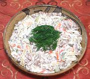

|
Abzhorka SaladRussia - Abzhorka | ||||
| Makes: Effort: Sched: DoAhead: |
6 cups *** 1 day Yes |
This is an outstanding appetizer salad, sure to please all (except the vegetarians). Boil the Beef a day ahead. The finished salad can be refrigerated overnight. | |||
|
1 14 1 5 4-1/2 ------- 1-1/2 2 2 1/2 1/3 ------- |
# oz t oz oz --- c T T t t --- |
Beef, boiled (1) Onions Oil Carrots Dill Pickles -- Dressing Mayonnaise Vinegar, white wine Olive Oil ExtV Salt Pepper ---------- |
Do Ahead - (2 to 6 hrs + cooling)
|